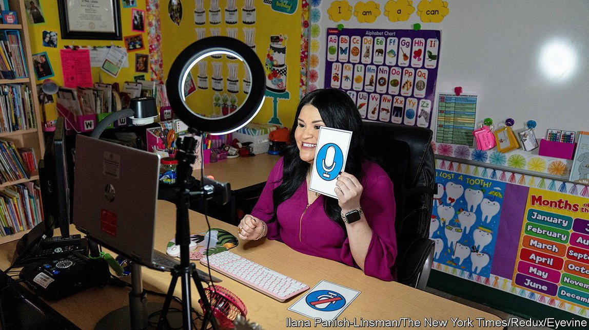

2021-09-27T15:29:13+00:00
Robot masters
教师驾驭机器人
教師駕馭機器人
Edtech that helps teachers beats edtech that replaces them
教育科技帮助教师免被教育科技取代
教育科技幫助教師免被教育科技取代
As children go back to in-person lessons in America some innovations will stay
在美国，等孩子们重新回归面授教学，一些创新将会保留下来
在美國，等孩子們重新回歸面授教學，一些創新將會保留下來
COVID-19 FORCED ten years of digital transformation in schools to take place in a month, says John Martin, the former leader of Sanoma Learning, an education technology (edtech) company. Teachers suddenly became more willing to use technology because the alternative was not to teach. Much of this technology will remain as pupils head back to the classroom this term. But the experience has refined what edtech is really for.
新冠肺炎迫使学校在一个月内完成了原本需要十年的数字化转型，教育科技（edtech）公司Sanoma Learning的前老板约翰·马丁（John Martin）说。老师们突然间变得更愿意使用技术了，因为不这么做的话就只能挥别讲台。当学生们在本学期回到教室时，这些技术中的很大一部分都将保留下来。但这段经历明确了教育科技的真正目标。
新冠肺炎迫使學校在一個月內完成了原本需要十年的數字化轉型，教育科技（edtech）公司Sanoma Learning的前老闆約翰·馬丁（John Martin）說。老師們突然間變得更願意使用技術了，因為不這麼做的話就只能揮別講台。當學生們在本學期回到教室時，這些技術中的很大一部分都將保留下來。但這段經歷明確了教育科技的真正目標。
School closures also forced entrepreneurs to grapple with a stark truth: few are interested in completely disrupting the classroom. For decades innovators imagined a future without traditional learning. MOOCs (massive open online courses), like Udacity and Coursera, were supposed to replace in-person learning. Teachers and school administrators feared that technologists were aiming to replace them. Before the pandemic, most American schools were hesitant to adopt technology, says Jean Hammond, co-founder of LearnLaunch Accelerator, a startup programme. “Lots of cool, amazing little things would come along. But because…schools hadn't been trained in how to adopt new technology, change was very slow.”
学校关闭期也迫使企业家去适应一个明明白白的事实：没什么人对彻底颠覆课堂感兴趣。几十年来，创新者畅想一个传统学习方式消失的未来。人们本以为优达学城（Udacity）和Coursera之类的慕课（MOOC，大规模开放在线课堂）会取代面对面教学。教师和学校管理人员担心技术专家会把他们替代掉。创业项目LearnLaunch Accelerator的联合创始人简·哈蒙德（Jean Hammond）说，在疫情发生前，大多数美国学校都对采用技术犹豫不决。“本来会有很多很酷很棒的小事情发生。但是因为……学校没有接受过如何采用新技术的训练，所以变化非常缓慢。”
學校關閉期也迫使企業家去適應一個明明白白的事實：沒什麼人對徹底顛覆課堂感興趣。幾十年來，創新者暢想一個傳統學習方式消失的未來。人們本以為優達學城（Udacity）和Coursera之類的慕課（MOOC，大規模開放在線課堂）會取代面對面教學。教師和學校管理人員擔心技術專家會把他們替代掉。創業項目LearnLaunch Accelerator的聯合創始人簡·哈蒙德（Jean Hammond）說，在疫情發生前，大多數美國學校都對採用技術猶豫不決。“本來會有很多很酷很棒的小事情發生。但是因為……學校沒有接受過如何採用新技術的訓練，所以變化非常緩慢。”
Tech entrepreneurs “put the tech before the ed” before the pandemic, explains Mr Martin. Innovators have since grasped that their technology must support teachers in the classroom rather than attempt to remove them, he explains. Much of the $2.2bn in venture and private-equity capital raised in 2020 is being invested with this in mind.
马丁解释说，在疫情前，科技企业家“把科技置于教育之前”。创新者在那之后已经意识到，他们的技术必须给课堂上的教师以支持，而不是试图将他们赶走。2020年筹集的22亿美元风险资本和私募股权资本中，很大一部分的投资都是基于这样的出发点。
馬丁解釋說，在疫情前，科技企業家“把科技置於教育之前”。創新者在那之後已經意識到，他們的技術必須給課堂上的教師以支持，而不是試圖將他們趕走。2020年籌集的22億美元風險資本和私募股權資本中，很大一部分的投資都是基於這樣的出發點。
Teacher training is one example of what this means in practice. Traditional teacher training is limited. “When teachers learn, they listen to people talk about teaching, and they talk with each other about teaching. They very rarely teach things,” explains Justin Reich of the Teaching Systems Lab at the Massachusetts Institute of Technology. “If you look at how nurses are trained, how therapists are trained, how clergy members are trained, they practise what they're doing all the time.”
这在实践中意味着什么？可以来看看教师培训这个环节。传统的教师培训是有局限的。“老师们在学着当老师时，他们听别人谈论教学，互相谈论教学。他们很少直接教授，”麻省理工学院的“教学系统实验室”（Teaching Systems Lab）的贾斯汀·赖克（Justin Reich）解释道，“如果你去看看护士、治疗师、神职人员是如何培训的，就会发现他们一直都在练习自己的工作。”
這在實踐中意味着什麼？可以來看看教師培訓這個環節。傳統的教師培訓是有局限的。“老師們在學着當老師時，他們聽別人談論教學，互相談論教學。他們很少直接教授，”麻省理工學院的“教學系統實驗室”（Teaching Systems Lab）的賈斯汀·賴克（Justin Reich）解釋道，“如果你去看看護士、治療師、神職人員是如何培訓的，就會發現他們一直都在練習自己的工作。”
This is starting to change. Researchers at the University of Virginia (UVA) are training their education students using virtual reality simulators created by Mursion, a tech company. The teacher trainees experience several virtual practice scenarios such as a parent-teacher conference, small-group instruction, and large-group instruction. A digital puppet master plays the role of the parent and pupils behind the scenes, but the developers plan for the programme to eventually become automated. The technology is currently being used in over 50 American colleges.
这已经开始改变。弗吉尼亚大学的研究人员正在使用科技公司Mursion创建的虚拟现实模拟器培训本校教育专业的学生。见习教师们体验了几种虚拟实践场景，比如家长会、小组教学和大班教学。一个数字“木偶操纵者”在幕后扮演家长和学生，但开发人员的计划是让该程序最终实现自动化。目前有50多所美国大学在使用这项技术。
這已經開始改變。弗吉尼亞大學的研究人員正在使用科技公司Mursion創建的虛擬現實模擬器培訓本校教育專業的學生。見習教師們體驗了幾種虛擬實踐場景，比如家長會、小組教學和大班教學。一個數字“木偶操縱者”在幕後扮演家長和學生，但開發人員的計劃是讓該程序最終實現自動化。目前有50多所美國大學在使用這項技術。
Sarah Kiscaden, a teacher trainee at UVA, is pleased with the experience. “If we didn't have this simulator, we would be learning everything in classes every day, and then be expected to just keep it all in our brain and apply it all at the same time, the next day in our schools. And I think that is a lot less realistic of an expectation than if you're taught a skill, and you get to practice it and internalise it.” The simulators also relieve the pressure of teaching in front of children for the first time.
萨拉·基斯卡顿（Sarah Kiscaden）是弗吉尼亚大学的一名见习教师，她对这种练习方式很满意。“如果没有这个模拟器，我们就得在每天的课堂上学会所有东西，大家期待我们第二天到校授课时都已经记在了脑子里，还全都用上了。我觉得，如果教你一种技能后，能让你去练习并把它内化，才是现实得多的做法。”模拟器还缓解了第一次在孩子们面前上课的压力。
薩拉·基斯卡頓（Sarah Kiscaden）是弗吉尼亞大學的一名見習教師，她對這種練習方式很滿意。“如果沒有這個模擬器，我們就得在每天的課堂上學會所有東西，大家期待我們第二天到校授課時都已經記在了腦子裡，還全都用上了。我覺得，如果教你一種技能後，能讓你去練習並把它內化，才是現實得多的做法。”模擬器還緩解了第一次在孩子們面前上課的壓力。
Artificial intelligence could also play a role in teacher training. Researchers at UVA and Worcester Polytechnic Institute are using machine learning, a process by which a computer learns to perform a task by analysing examples, to evaluate videos of teachers in action. Currently teachers get feedback from fellow humans, often administrators, who come to the classroom, observe a lesson and score the teacher. The researchers hope eventually to use machine learning to automatically score teachers, making the current feedback process more frequent, more accurate and less time intensive.
人工智能或许也能在教师培训中发挥作用。弗吉尼亚大学和伍斯特理工学院（Worcester Polytechnic Institute）的研究人员正在使用机器学习（也就是让计算机通过分析例子来学着执行任务）评估教学视频。目前老师们都是从其他人那里得到反馈，通常是行政人员，他们会来到教室听一节课，然后给老师打分。研究人员希望最终能够运用机器学习来自动为教师评分，让现行的反馈过程更频繁、准确，也更省时间。
人工智能或許也能在教師培訓中發揮作用。弗吉尼亞大學和伍斯特理工學院（Worcester Polytechnic Institute）的研究人員正在使用機器學習（也就是讓計算機通過分析例子來學着執行任務）評估教學視頻。目前老師們都是從其他人那裡得到反饋，通常是行政人員，他們會來到教室聽一節課，然後給老師打分。研究人員希望最終能夠運用機器學習來自動為教師評分，讓現行的反饋過程更頻繁、準確，也更省時間。
Barriers remain for edtech, despite the path cleared by the pandemic. Ms Hammond explains that outdated regulations can limit classroom innovation. Some state standards are rigid, even specifying the number of hours that must be spent in a classroom. Edtech is also unusual in that the end users are not often the buyers.
尽管疫情扫清了道路，但教育科技仍面临障碍。哈蒙德说，过时的法规可能会限制课堂创新。一些州的标准很严格，甚至规定了必须用于课堂教学的小时数。教育科技还有一个特殊性：它的终端用户通常并不是买家。
儘管疫情掃清了道路，但教育科技仍面臨障礙。哈蒙德說，過時的法規可能會限制課堂創新。一些州的標準很嚴格，甚至規定了必須用於課堂教學的小時數。教育科技還有一個特殊性：它的終端用戶通常並不是買家。
The buyer might be the school district, the user might be the teacher, and the real user is the learner. “It’s very hard to get the learner voice into the mix of things,” explains Ms Hammond. And the purchasing usually occurs only once per academic year. Tyler Borek, co-founder of Literably, an edtech startup, says that this provides fewer opportunities to iterate. Still, much of the technology used during the pandemic—classroom devices, apps for parents to follow their child’s progress and so on—is here to stay.■
买家可能会是学区，用户可能会是老师，而真正的用户是学习者。“很难在这样的混杂之中听到学习者的声音。”哈蒙德说。而且购买通常每学年只发生一次。教育科技创业公司Literably的联合创始人泰勒·博雷克（Tyler Borek）表示，这减少了迭代的机会。尽管如此，像教室设备、让家长能跟踪子女学习进度的应用等许多疫情期间使用的技术仍会保留下来。
買家可能會是學區，用戶可能會是老師，而真正的用戶是學習者。“很難在這樣的混雜之中聽到學習者的聲音。”哈蒙德說。而且購買通常每學年只發生一次。教育科技創業公司Literably的聯合創始人泰勒·博雷克（Tyler Borek）表示，這減少了迭代的機會。儘管如此，像教室設備、讓家長能跟蹤子女學習進度的應用等許多疫情期間使用的技術仍會保留下來。